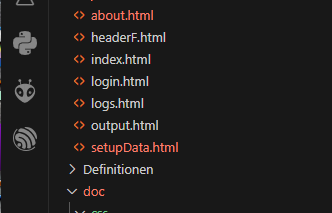
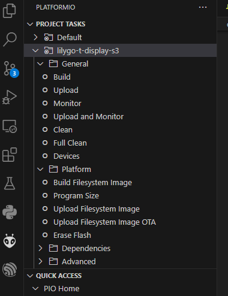

Der Energie-Harvester hat ein REST-Interface, d.h. die Bedienung/Auswertung wird per WWW realisiert. Die
entsprechenden Ressourcen sind im Verzeichnis "data" zu finden. Dieses Verzeichnis muss aber separat (!)
geflasht werden.
Das Flashen wird per PlatformIO-Toolchain durchgeführt:
-
PlattformIO aufrufen

-
lilygo-t-display anwählen

- Build Filesystem Image und Upload Filesystem Image durchführen
- Sodann die C-Sourcen compilieren und Flashen